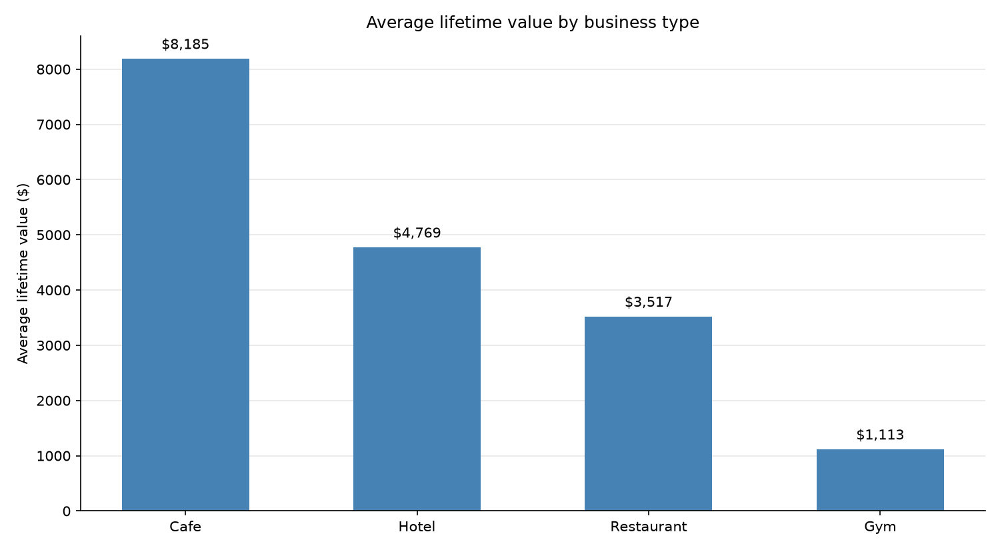
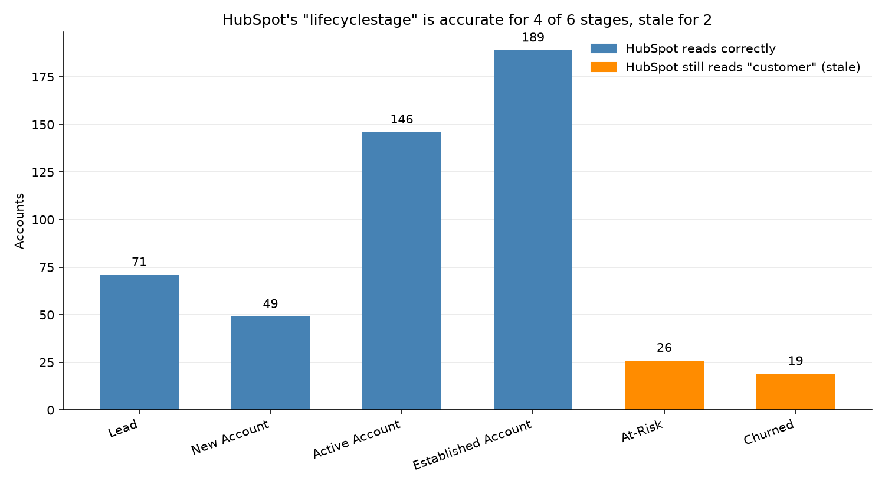
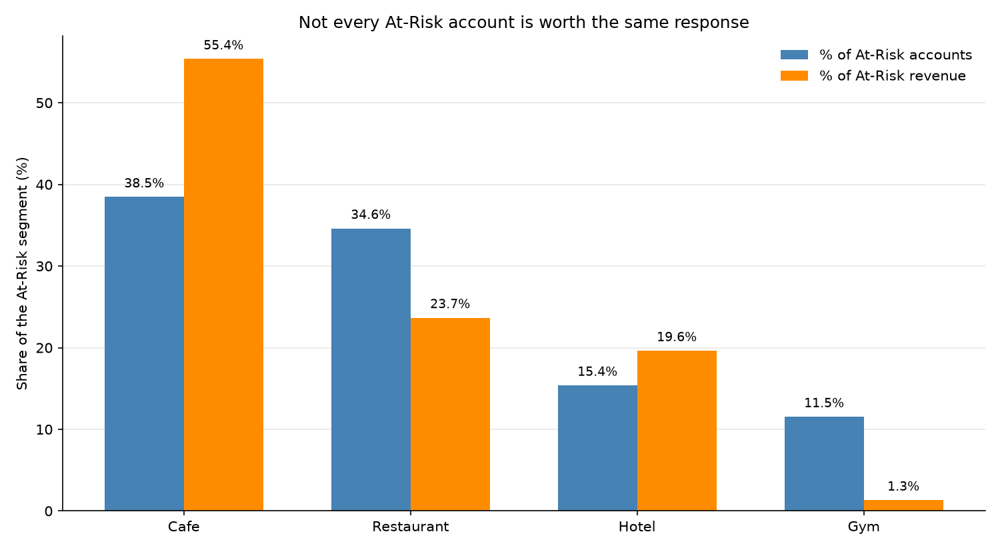

Coffee Wholesale Analytics
Lifecycle Segmentation & Retention Strategy
500 fictional wholesale accounts — restaurants, cafes, hotels, gyms — generated with realistic buying patterns and seeded as real contacts in a live HubSpot portal and real customers in a live Shopify dev store, not just a spreadsheet exercise. Nothing about any company, order, or contact is real. Full write-up, code, and data on GitHub →
The starting question was simple: once a book of wholesale accounts has had time to actually behave — order, reorder, slow down, go quiet — does the CRM tracking them still reflect reality, and what would a retention program look like if it were built directly against that live, connected data instead of assumed from a slide? Business type, order behavior, and lifecycle stage were the variables in view, read from live HubSpot and Shopify accounts rather than a static dataset alone.
Asking Questions
- Does account value differ meaningfully by business type, or is a "typical" wholesale account a reasonable planning unit?
- Does the CRM's recorded lifecycle stage still reflect reality once accounts have had time to churn or go quiet?
- Within a single "At-Risk" label, are all accounts equally worth saving?
- What would a real, relationship-first retention program look like for every stage of the lifecycle, not just the ones easy to automate?
Getting and Connecting the Data
The 500 accounts were generated with weighted, business-type-specific buying patterns rather than uniform random data, then seeded as real contacts in a HubSpot test portal and real customers in a Shopify dev store through each platform's own API, authenticated via CLI/OAuth credentials rather than hardcoded tokens. Lifecycle stage (Lead, New Account, Active Account, Established Account, At-Risk, Churned) is derived from actual order recency and frequency, not a label typed in by hand — which made it possible to test something a typed-in label couldn't answer: whether HubSpot's own recorded status keeps up with that reality once accounts have had time to drift.
One thing had to be fixed before any of this was trustworthy. HubSpot's native lifecyclestage field only ever gets set once, on first sale, and is never revisited — realistic, but useless for telling an Active account from a Churned one. Writing the real 6-stage value into a new custom property first, then reading segments back live from HubSpot rather than trusting the local file alone, was the only way to make sure the retention program below is built on what the CRM actually shows, not what the spreadsheet assumes.
01Business type predicts value far better than a generic wholesale account

Cafes average $8,185 in lifetime value, more than 7x a gym's $1,113; hotels and restaurants sit in between at $4,769 and $3,517. Treating "wholesale account" as one planning unit hides a nearly order-of-magnitude spread — a flat retention or outreach budget per account would badly misallocate effort before any campaign even ships.
02HubSpot's recorded status goes stale exactly where it matters most

HubSpot's lifecyclestage is accurate for every Lead, New, Active, and Established account (455 of 500) — but for all 26 At-Risk and all 19 Churned accounts, it still reads "customer," because the field is set once on first sale and never revisited. That's not scattered noise, it's the exact two stages a retention program needs most, both wrong 100% of the time. Fixed by writing the real 6-stage value into a new property and reading segments back from that instead of the stale field.
03Not every At-Risk account is worth the same response

26 accounts are currently At-Risk, representing $104,850 in combined lifetime value. Cafes are 38.5% of that count but 55.4% of that revenue ($58,058) — restaurants and hotels track closer to proportional, and gyms are 11.5% of the accounts but just 1.3% of the revenue at stake. A single "win them all back" campaign spends the same effort on segments worth very different amounts.
Retention Program, by Stage
Five relationship programs, one per stage, drafted for review rather than sent — a free/dev HubSpot portal doesn't have marketing-send access either way, and no fabricated response rate is worth a more impressive-looking page. Lead is left out on purpose: that's an acquisition question, a different project.
Establish a real point of contact before it's just a transactional vendor
One personal email 2-3 weeks after the first order, from a named contact, not a marketing address. No upsell — the goal is trust, not a second sale.
Deepen the relationship before there's a problem to react to
Quarterly touch paired with something useful, like the next origin rotation. The largest group, and the one most likely to get no attention until it stalls.
Recognize loyalty before complacency becomes the risk
Roughly annual, tied to tenure — first access to a limited-run origin for the highest tier, plain recognition without a sales pitch for the rest.
Ask why before offering a discount
A phone call from an account manager for the cafe segment specifically — 55% of the revenue at stake here — a personal email for everyone else. Leads with a genuine question, not a price cut.
Leave the door open, then actually stop
One graceful note, no follow-up if unanswered. Continuing to chase an account that already chose to leave reads as pressure, not care.
Conclusions & Recommendations
- Segment retention effort by stage and business type together, not stage alone — cafes carry disproportionate revenue risk inside the At-Risk group specifically.
- Fix the underlying CRM field before building any campaign on it — a stale lifecyclestage would have pointed this entire program at the wrong 91% of accounts.
- Give each lifecycle stage its own relationship goal instead of one repeating drip sequence — an Established account and a New account have nothing in common to hear.
- Treat At-Risk as a listening moment before a save offer — lead with a genuine question, reserve the discount for when price is actually named as the reason.
Limitations
- Nothing was sent. All campaign copy is drafted for review, not measured — a free/dev HubSpot portal doesn't have marketing-send access, and no fabricated open or response rate is worth a more impressive-looking page.
- Synthetic data throughout. Every account, order, and contact is generated; pricing and regional patterns are benchmarked against real specialty roasters, but no real company or customer appears anywhere in this project.
- Value tier is a 3-way split of 4 categories, not a full RFM model — a simpler cut, chosen because the LTV gap between cafe and everyone else was already large enough not to need one.
- Shopify integration covers customers only, not orders — a real win-back offer tied to an actual discount code is a natural next step, not yet built.